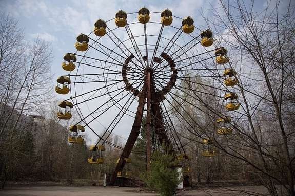
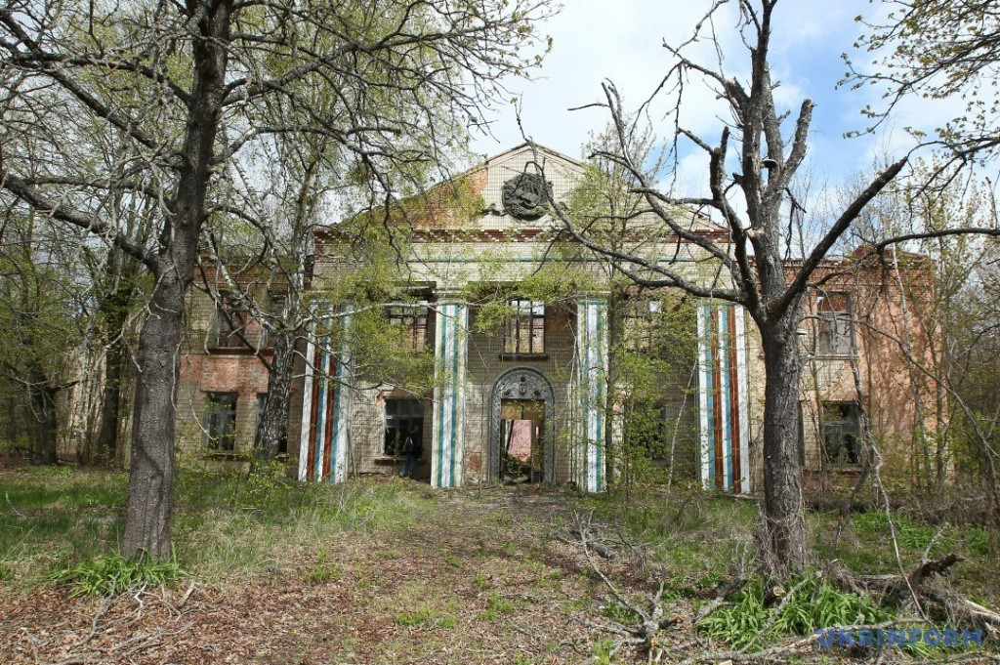

Добірка трьох особливих локацій 🏚️
Оберіть місто, щоб дізнатися про його історію, архітектуру та наші власні враження від мандрівки:

Читати про Прип'ять

Читати про Орбіту

Читати про Поліське
Підписка на нові експедиції ✉️
Залиште свою електронну адресу, щоб отримувати фотозвіти та маршрути нових подорожей містами України.